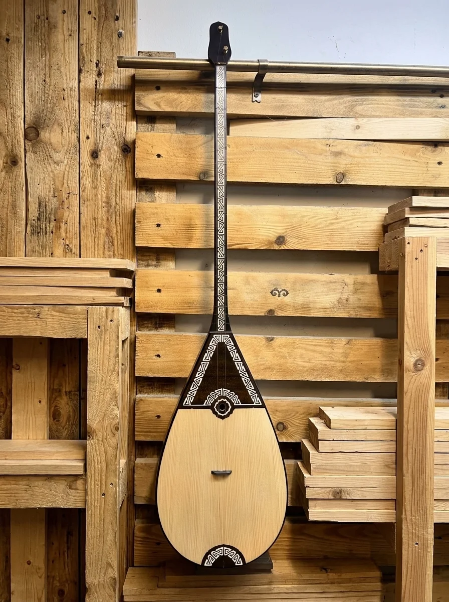
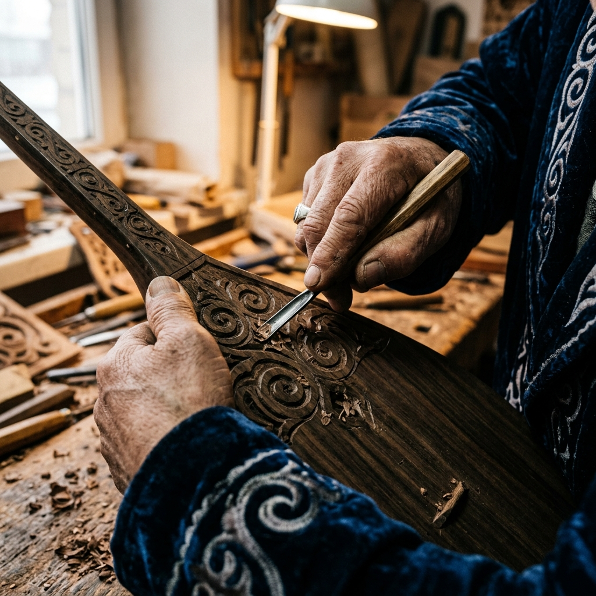
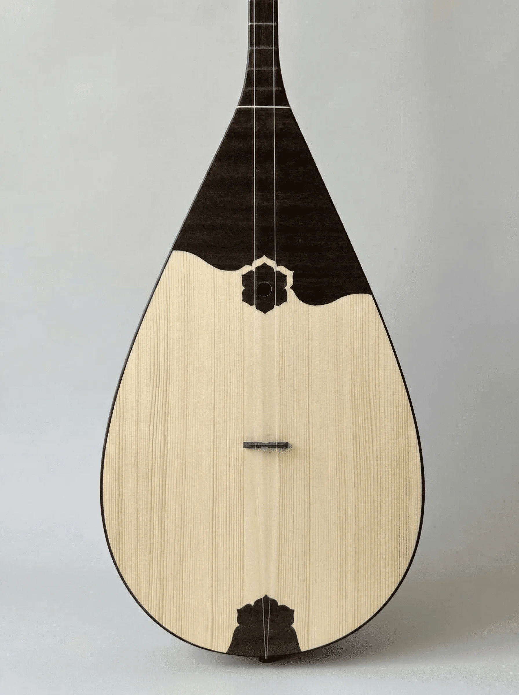
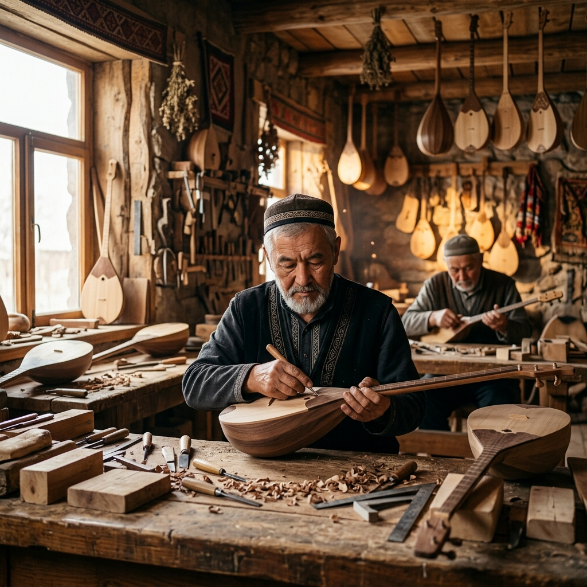

Полезные статьи
Всё, что нужно знать о выборе, истории и обучении.

Как выбрать свою первую домбру?
6 ключевых вопросов, на которые нужно ответить перед покупкой инструмента для обучения.
Читать статью
Где лучше покупать домбру?
Сравнение рынков, музыкальных магазинов и частных мастерских: все плюсы и минусы.
Скоро будет
Домбра для ребенка
Почему качество первого инструмента напрямую влияет на желание ребенка продолжать занятия.
Скоро будет
Размер домбры
Разбор того, как измеряется размер домбры и на что он влияет при выборе инструмента.
Скоро будет
Секреты дерева
Породы дерева and их влияние на уникальный тембр и долговечность вашей домбры.
Скоро будет
50к VS 500к тенге
Разъяснение различий между бюджетными и дорогостоящими инструментами для новичков.
Скоро будетКурсы обучения
Рассказ об опыте обучения учеников за многие годы работы нашей мастерской.
Скоро будет
Айтишник-домбрист
Как специалист из IT исполнил свою мечту и научился играть на домбре с нуля.
Скоро будет
Музыка против рутины
История о том, как домбра помогает найти вдохновение и спокойствие вне рабочих будней.
Скоро будет
Музыка против рутины
История о том, как домбра помогает найти вдохновение и спокойствие вне рабочих будней.
Скоро будетОстались вопросы?
Свяжитесь с нами — наши мастера с радостью проконсультируют вас по выбору дерева, уходу за инструментом и помогут подобрать идеальную домбру под ваш стиль игры.
Консультация
+7 (775) 522 69 01